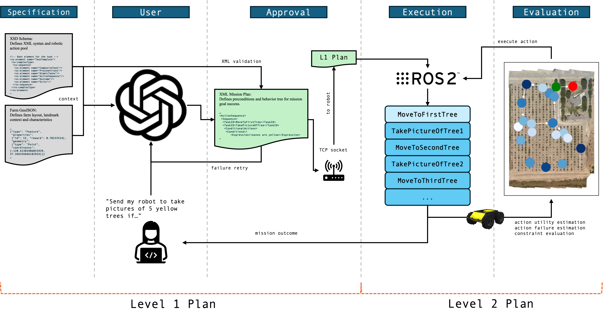

For those interested, here are some resources from the paper.

A video demonstrating the use of the entire ROS2 suite on target. The robot used is a ClearPath Husky running with an Nvidia Jetson Orin Nano.
We circumvent the ChatGPT portion here for the sake of showing the mission as has been generated by ChatGPT for the viewer.
Upper left are the modules that run the IMU and GNSS. Upper right is the custom mission planning ROS node to interface with the ChatGPT generated mission.
Bottom right is the Nav2 stack and the rest of the nodes required to run the ClearPath Husky. Bottom left is the orchestration node that connects them all together.

Our novel architecture using ChatGPT to generate mission plans for autonomous robots with constraints and conditionals.
This architecture models IEEE Standard 1872.1-2024 published for robotic task representation.
From our paper, these are the full queries as represented by the short-hand versions. Note, that these are only the spatial queries.

From our paper, these are the full queries as represented by the short-hand versions. Note, that these are only the non-spatial queries.